Estética Dental
Clareamento, facetas e restaurações estéticas para um sorriso mais harmonioso, natural e confiante.
AgendarDr. Paulo Lenci, cirurgião-dentista formado pela Unicamp: estética dental, próteses e implantes, tratamento de ATM e dor orofacial e aparelho para ronco e apneia, com formação internacional.
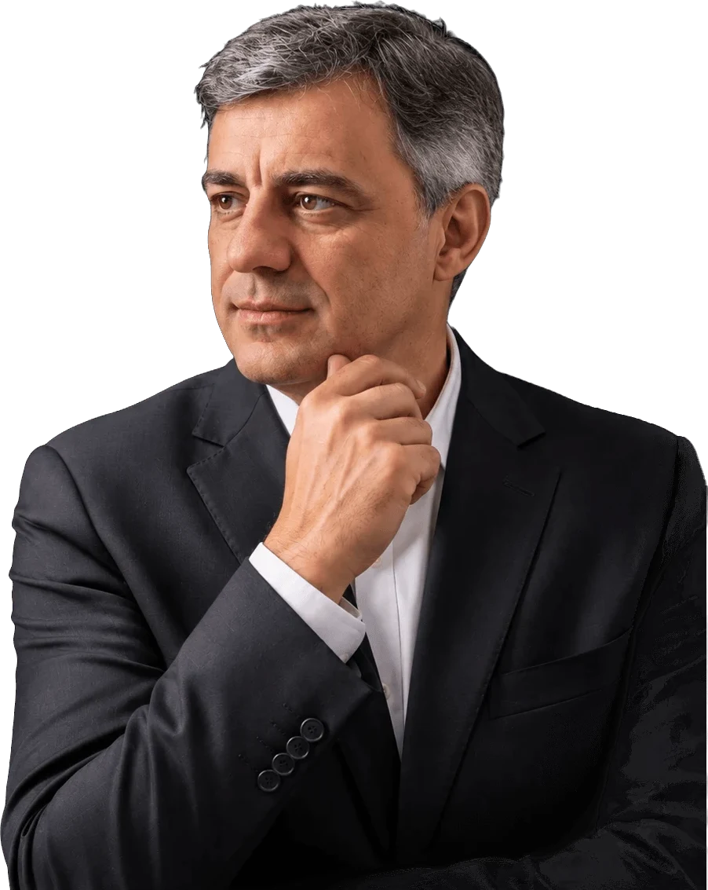
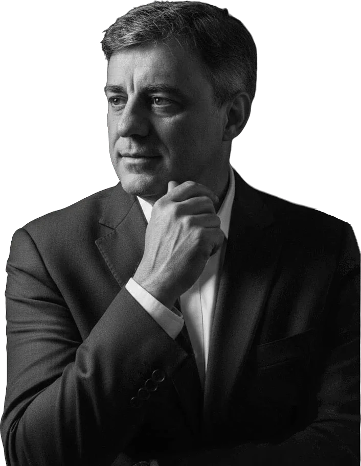
Sou o Dr. Paulo Lenci, cirurgião-dentista formado pela Unicamp, com especialização em Radiologia, Ortopedia Funcional dos Maxilares e Disfunção da ATM e Dor Orofacial.
Tenho aperfeiçoamento em Implantologia, cirurgia para enxertos ósseos, prótese sobre implantes, estética dental e prevenção da má-oclusão, entre outras áreas.
Clareamento, facetas e restaurações estéticas para um sorriso mais harmonioso, natural e confiante.
AgendarImplantes dentários e próteses fixas, removíveis e sobre implantes (Dentatus e Bicon) para devolver função, conforto e estética.
AgendarDiagnóstico e tratamento de DTM (disfunção da articulação temporomandibular), bruxismo, dores na face e dor de cabeça.
AgendarAparelhos intraorais sob medida que reduzem o ronco e a apneia do sono, melhorando o descanso e a qualidade de vida.
Conhecer o SilentUm dispositivo oral fabricado sob medida que posiciona a mandíbula levemente para a frente. Isso aumenta o espaço das vias aéreas e reduz a velocidade do ar e a vibração dos tecidos moles — a causa do ronco.
O ajuste é confortável e permite pequenos movimentos da mandíbula (ATM), para uma respiração e uma movimentação mais livres da boca durante o sono.
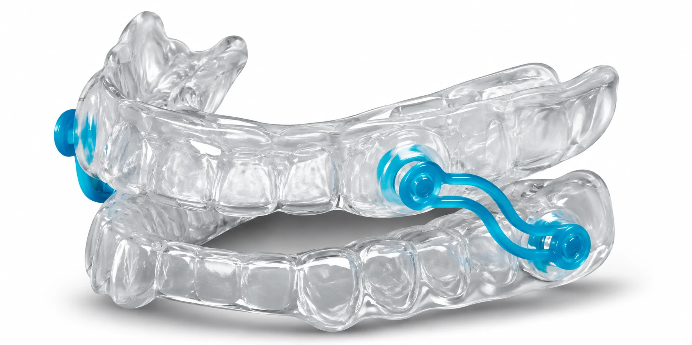
1 2 3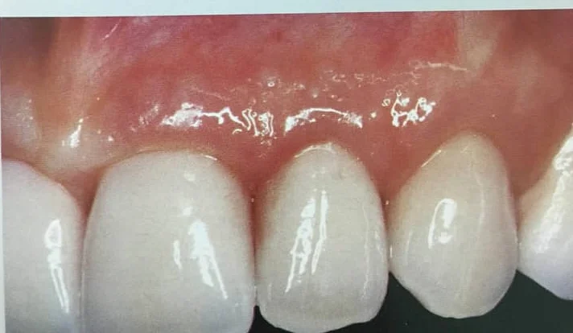
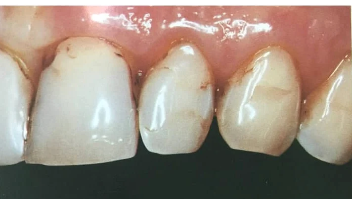
Dentes desgastados e manchados recuperam forma, cor e naturalidade. Cada caso é planejado de forma individual, respeitando o rosto e o sorriso de cada paciente.
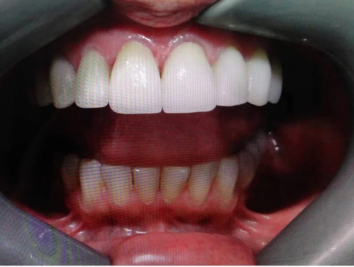
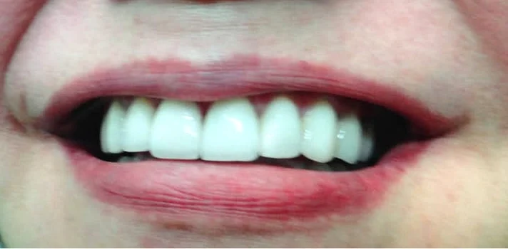
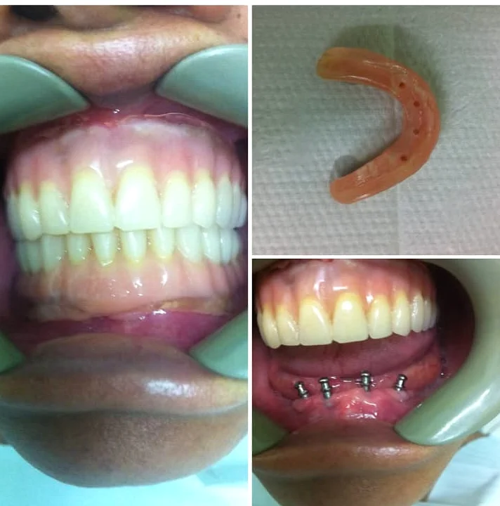
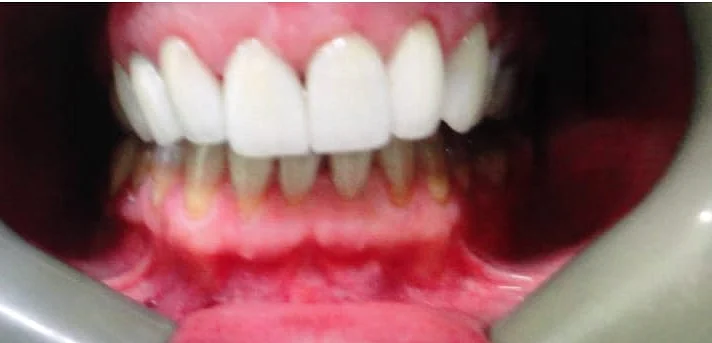
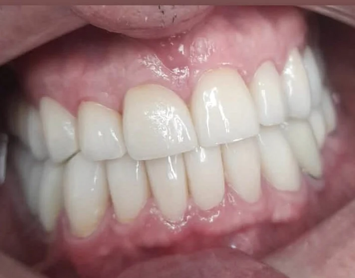
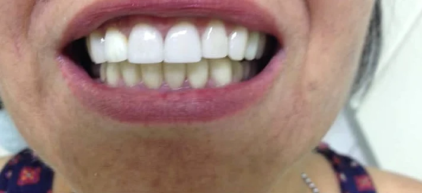
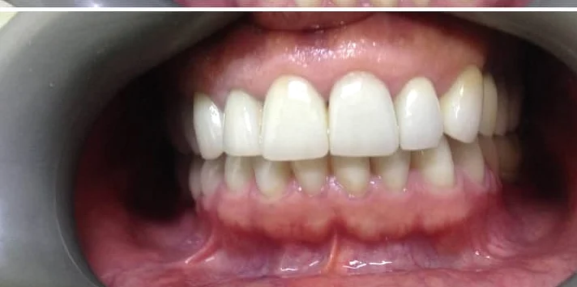
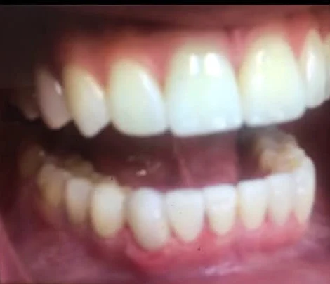
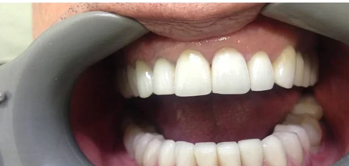
Imagens de casos atendidos pelo Dr. Paulo Lenci. Os resultados variam de acordo com cada paciente.
Formação em Radiologia e Ortopedia Funcional dos Maxilares para entender a causa do problema, não só o sintoma.
Especialização e estágios em centros de dor orofacial na Espanha e nos Estados Unidos.
Cada tratamento é planejado de forma individual, com explicação clara de cada etapa.
Preencha o formulário e fale direto com o consultório pelo WhatsApp.
Escolha a especialidade, o dia e o período de preferência. Sua mensagem chega pronta no WhatsApp do Dr. Paulo.
Novo endereço, com fácil acesso para quem procura dentista perto de casa em Limeira e para pacientes de cidades vizinhas como Iracemápolis, Cordeirópolis, Araras, Engenheiro Coelho e Americana.
Rua João Machado Gomes, 73
Vila Cláudia · Limeira - SP
| Segunda a sexta | 08:00 – 11:30 13:30 – 17:00 |
| Sábado | Fechado |
| Domingo | Fechado |
Não encontrou sua dúvida? Fale direto com o consultório pelo WhatsApp (19) 98938-5757.
O consultório fica na Rua João Machado Gomes, 73, no bairro Vila Cláudia, em Limeira-SP. É o novo endereço do Dr. Paulo Lenci, com acesso fácil pelo mapa e pelo Waze nesta página.
Preencha o formulário de agendamento deste site, escolhendo a especialidade, os dias e o período de preferência. A mensagem chega pronta no WhatsApp do consultório, que confirma o seu horário. Também é possível ligar ou chamar no (19) 98938-5757.
De segunda a sexta-feira, das 8h às 11h30 e das 13h30 às 17h. Aos sábados e domingos o consultório não abre.
Sim. O Dr. Paulo Lenci é especializado em Disfunção da ATM e Dor Orofacial, com estágios nos Estados Unidos e na Espanha. Ele faz o diagnóstico e o tratamento de DTM, bruxismo (ranger ou apertar os dentes), dores na face e dor de cabeça relacionada à mandíbula.
Sim. O Silent é um aparelho oral feito sob medida que posiciona a mandíbula levemente para a frente, abrindo as vias aéreas e reduzindo o ronco. A indicação é feita após uma avaliação no consultório.
Sim. O Dr. Paulo tem aperfeiçoamento em Implantologia, enxertos ósseos e prótese sobre implantes, com habilitação nos sistemas Dentatus e Bicon (EUA). Também faz próteses fixas e removíveis.
Sim. Além de Limeira, o consultório recebe pacientes de cidades vizinhas como Iracemápolis, Cordeirópolis, Araras, Engenheiro Coelho e Americana.
Agende sua avaliação e cuide da sua saúde bucal com quem entende do assunto.